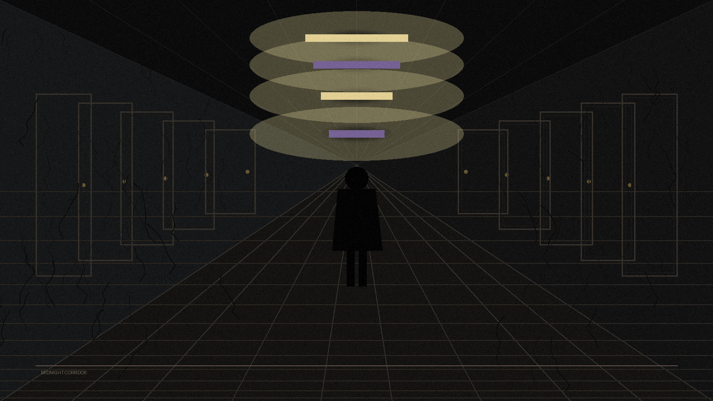

林晓辰已经在那栋楼工作了三年。
三年里，她学会了忍受那些细碎的、折磨人的声响：深夜两点准时响起的脚步声，从楼道东头走到西头，然后消失；凌晨三点四十七分某扇窗户自动打开的吱呀声；还有电梯在没有任何人按动的情况下，自己一层一层往上爬的沉闷嗡鸣。
她是这栋旧公寓楼的物业管理员。楼建于1990年代，十五层，外墙爬满了枯死的藤蔓，像一道道干涸的血管。没有电梯维护记录，没有原始图纸，没有物业档案——她接手时，前任只留下一把钥匙和一句话："别上十三层。"
她问为什么。
前任没有回答。那是两年零七个月前的事了。
今夜和往常一样。晓辰坐在一楼值班室里，面前是一台老旧的CRT显示器，屏幕右上角的时间闪烁着00:00。外面起了雾，不大，却足以让路灯的光晕变成一团团模糊的白。她刚泡了一杯茶，茶水还是滚烫的。
她正准备去倒掉——反正也睡不着——电梯的嗡鸣声突然停了。
整栋楼陷入一种她从未经历过的寂静。不是普通的安静，不是夜深人静时那种可以承受的静默。而是一种压迫性的、实质性的寂静，像有人把整栋楼用保鲜膜封了起来。
然后，电梯发出了声音。
不是上行，不是下行。是一声……敲击。从电梯井深处传来，轻轻的，一下，一下，像有人用指节叩着金属门板。
晓辰没有动。她的心跳声在耳膜里擂得很响。
晓辰没有去开门。她告诉自己：那只是电梯的正常故障，老楼的电梯总会发出奇怪的声音。这很正常。一切都很正常。
她拿起茶杯，喝了一口。茶水还是烫的，舌尖传来刺痛。
就在这时，她听到了另一个声音。
很轻，像从电梯厢里传出来的。不是敲击声，是……呼吸声。很浅，很急促，像是有人被困在里面，正在拼命地想要引起注意。
晓辰站起身。她知道这不合逻辑——电梯刚才明明停在一楼，门是开着的。但她还是站了起来，朝着电梯的方向走了两步。
然后她停住了。
她清楚地记得，这栋楼只有十五层。十二层上面是十四层，没有十三层。这是所有中国人的常识：带"4"的楼层可以跳过，带"13"的楼层也可以跳过。很多旧楼都这样建造。但她从来没有见过省略的楼层会以按钮的形式……自己亮起来。
晓辰没有按那个按钮。
她退回了值班室，把门反锁上。茶已经凉了。她盯着那扇金属门，心跳每分钟超过一百二十下。
一分钟后，电梯面板上的"13"熄灭了。
两分钟后，电梯开始运行。不是上行，是下行。一层，两层，三层……一直往下，往下，像是电梯井挖穿了地基，挖穿了地壳，挖进了某个没有尽头的深渊。
晓辰数着楼层。她数到了负三层。然后，电梯的嗡鸣声彻底消失了。连同那栋楼的一切声响——脚步声，窗户声，水管的滴答声——全部消失。
只剩下她自己的呼吸。
不知过了多久，晓辰的意识才重新连贯起来。
她发现自己正站在电梯门前。右手食指搭在电梯的"召唤"按钮上，那是一块凸起的金属片，有些冰凉。她不记得自己什么时候走出了值班室，也不记得什么时候来到了这里。
手机没有信号。屏幕上显示的时间是00:00——和十分钟前一模一样。
电梯门开了。
不是她召唤的。是电梯自己开的。里面亮着灯——那种惨白的、日光灯管濒死时才会发出的光。一张椅子摆在电梯正中央，面朝门，背对着她。椅子上坐着一个人。
背影。穿着一件灰色的旧西装，肩膀窄而塌，头微微低着。
晓辰听见自己的声音从喉咙里挤出来："……有人吗？"
椅子的人动了。慢慢地，像拆卸一个生锈的机械装置一样，慢慢地把头转过来。
转了一半的时候，晓辰看到了那是一张什么样的脸。
那张脸是……空的。不是没有五官，不是黑暗，是"空的"——像一张白纸，一张刚刚被擦干净、还没有来得及画上任何东西的纸。只有五官的轮廓，像用铅笔轻轻描出的虚线。

晓辰尖叫了。但是她的声带好像被什么东西攥住，尖叫声没有发出任何声音——只有气流穿过喉咙的嘶嘶声，像漏气的轮胎。
那张空脸上，突然出现了两只眼睛。
不是长出来的，是睁开的。像有人从纸的背面猛地戳破了那层白色的表面，两只布满血丝的眼睛从里面翻了出来。它们是人类的眼睛，眼白泛黄，瞳孔漆黑，正盯着她。
然后，那双眼睛闭上了。脸也消失了。椅子空了。电梯里的灯熄了。
只剩下电梯门，缓缓地合上。
晓辰不记得自己是怎么回到值班室的。只记得她推开门的力道非常大，肩膀撞在门框上，痛感让她稍微清醒了一些。
她打开电脑。旧档案系统里有一份从未被完整打开过的文件，文件名是"电梯维护记录_1998-2005.doc"。她从来没有成功打开过，每次双击都会报错："文件已损坏或格式不支持。"
今晚不一样。今晚她双击，文件打开了。
日期：1999年3月13日
事件：电梯在13:13发生异常停梯事故。电梯停于B1层而非标准楼层标记区域。救援人员到场后发现轿厢门处于开启状态，内有乘客一名，男性，约三十岁，发现时已无生命体征。
现场记录：轿厢内壁发现大量抓痕，深约2-3mm，从内部向外施力形成。该乘客双手指甲全部断裂脱落，手指皮肤严重磨损。死因初步判定为窒息，但颈部无勒痕，呼吸道无阻塞物。
备注：此后新建楼层的楼层编号体系调整，原B1层调整为设备层，不再对普通住户开放。
晓辰的手开始发抖。她继续往下翻。
日期：2001年7月17日
事件：电梯再次于凌晨时段发生异常运行，停于B1层。住户报告在凌晨时分听见电梯从1层运行至B1层，停留约3分钟后上行归位。监控录像显示轿厢内部存在持续运动的人形阴影。
处理意见：建议对B1层电梯门进行焊封处理。已于2001年7月18日完成焊封。
晓辰盯着屏幕。一个念头像冰块一样滑进她的脊椎：
B1层电梯门被焊封了。那她刚才看到的打开的电梯门……
还有，1999年死于电梯的那个男人，穿的也是灰色西装。
她想起了什么。钥匙。前任留下的钥匙。她之前从来没有用过，因为电梯机房用的是电子锁。但是前台的抽屉里，有一把铜色的老钥匙，上面刻着"B1_电梯机房_紧急"。
那把钥匙，现在就在她桌上。
她不记得把它拿出来的。
晓辰拿着手电筒，站在通往地下一层的楼梯口。
楼梯很旧，混凝土台阶上有裂缝，裂缝里长着苔藓。手电筒的光只能照亮三步的距离，再往前就是黑暗。真正的黑暗，不是光线不足的黑暗，是那种会吸收光线的、质地厚重的黑暗。
她一步步往下走。十步，二十步。她开始觉得不对——从一楼到地下一层，不应该走这么远。她回头想看自己走了多少级台阶，手电筒照向楼梯上方——
什么都没有。楼梯上方只有黑暗。不是"没有楼梯了"的黑暗，是"有东西把楼梯上方堵住了"的黑暗。
又走了不知道多久，她终于到了。眼前是一扇锈迹斑斑的铁门，门上贴着一张发黄的告示：「设备层 闲人免进」。门把手上系着一根红绳，红绳上挂着一个生锈的小铃铛。奇怪的是，铃铛没有任何划痕——这扇门显然很久没有被打开过了。
但铃铛是新的。
晓辰伸出手，把手放在门把手上。铁门冰凉。红绳在轻微晃动。她不知道是不是自己的错觉，但她觉得铃铛在朝她的方向……倾斜。
她用那把铜钥匙打开了门。
机房很小，只有一台控制柜和一堆杂物。空气里弥漫着铁锈和某种……甜腐的气味。晓辰没有去辨认那是什么味道。她走向控制柜，发现它上面贴着一张手写的纸条，字迹歪歪扭扭，像是用左手写的：
周海涛。那个死于电梯的男人的名字。
他在死前留下了这张纸条。他知道会发生什么。他是……自愿的？
晓辰的手无意识地伸向控制柜上的一个按钮。那是一个红色的紧急制动按钮，周围有一圈金属框。按钮旁边刻着一行小字：
B1 — 底层召唤
EMERGENCY USE ONLY
就在她盯着那个按钮的时候，电梯井深处传来了一阵声音。
不是敲击。不是呼吸。
是键盘敲击声。很快，很急促，像有人在打字。
然后，她听见了电梯的嗡鸣声。是从井底传上来的。电梯正在从……某个很深的地方，往上爬。
电梯在B1层停了。
机房有一扇小窗，正对着电梯井。晓辰把脸贴上去，手电筒的光照进井道——她看见了那部电梯。轿厢门开着，和她之前看到的一样。但这次，里面没有椅子，没有空脸人。
里面有一台打字机。
老式的机械打字机，正在自动地、飞快地敲击着键盘。没有人操作它。纸页从机器里吐出来，上面密密麻麻地打满了字。晓辰看不清写的什么，但她能感觉到——
那台打字机在记录什么。记录每一个曾经按过B1按钮的人。它记录了周海涛。它在等待下一个。
凌晨四点二十三分，巡逻的保安在地下一层楼梯口发现了林晓辰。她坐在台阶上，背靠着一扇锈迹斑斑的铁门，手里紧紧攥着一把铜钥匙。她的眼睛是睁着的，但没有焦点。
电梯控制柜上的B1按钮，不见了。
只留下一个空洞的凹槽，里面有一行刻字：
第二天，物业发布公告：电梯维修，B1层设备层无限期封闭。所有住户不得进入地下一层。公告贴在每层楼的电梯口，但没有人注意到——
公告的落款日期是1999年3月14日。那是二十七年前。
全书完 · 约五千字 · 2026